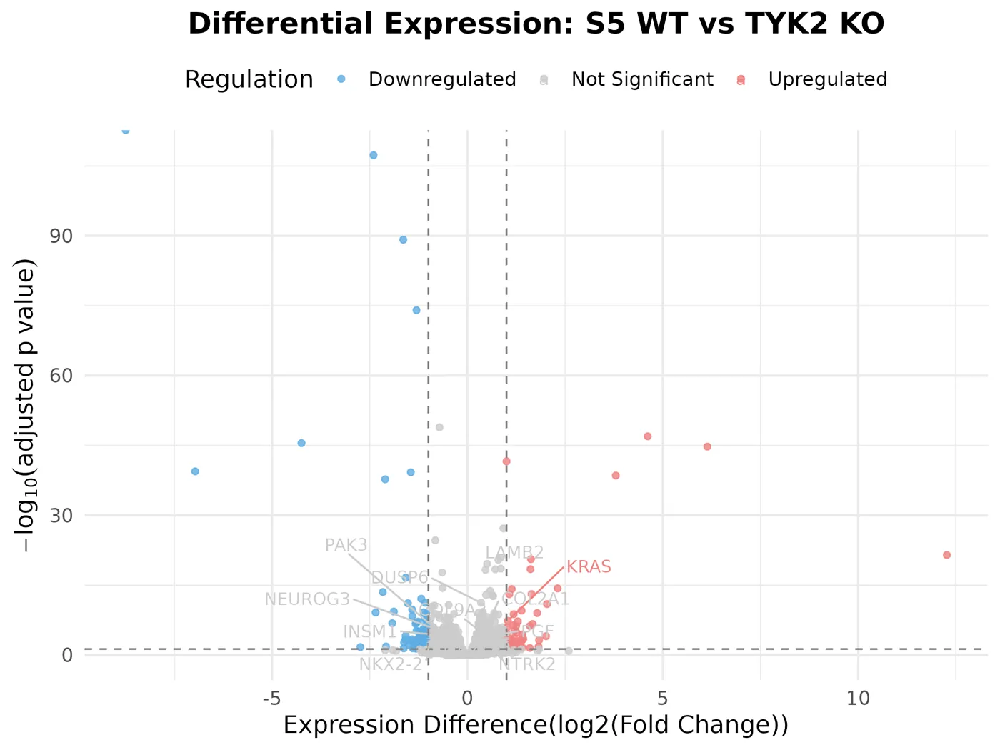
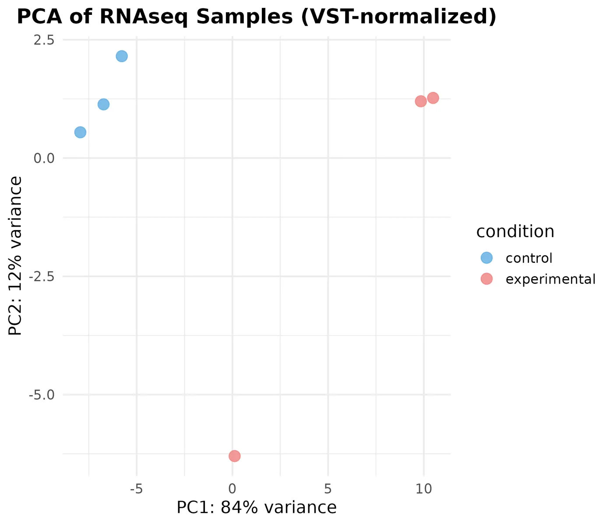
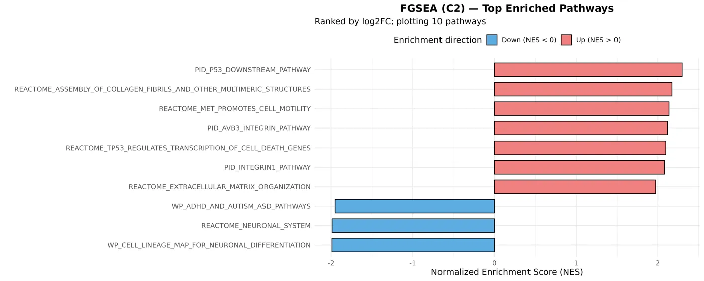

Course project · Nextflow and R
RNA-seq: TYK2 in Pancreatic β-Cell Development
Reproduction of Chandra et al. 2022 (Nature Communications): how TYK2 knockout changes gene expression at the S5 endocrine progenitor stage.
The problem
Take a published study and rebuild its differential-expression and pathway results from raw reads, then compare conclusions honestly, including where mine differ.
What I did
Reads to counts, in Nextflow
FastQC and MultiQC, STAR alignment to GRCh38, and VERSE gene counts, with each tool in its own process.
Filter, model, test
Genes need at least 1 CPM in at least 3 samples. DESeq2 fits
~conditionfor TYK2 KO against wild type.Interpret
Volcano plot, then Enrichr/Reactome on the significant genes and fgsea on ranked genes against MSigDB C2 pathways.
Code
cpm_matrix <- cpm(as.matrix(raw_counts))
keep <- rowSums(cpm_matrix >= 1) >= 3
filtered_counts <- raw_counts[keep, ]
# ...
condition <- factor(c(rep("control", length(control_cols)),
rep("experimental", length(exp_cols))))
coldata <- data.frame(row.names = colnames(filtered_counts),
condition = condition)
dds <- DESeqDataSetFromMatrix(countData = filtered_counts,
colData = coldata,
design = ~condition)
R: expression filter and DESeq2 model
dds <- DESeq(dds)
res <- results(dds)
res <- res[order(res$padj), ]
R: differential expression
log2FoldChange >= log2fc_cutoff ~ "Upregulated",
log2FoldChange <= -log2fc_cutoff ~ "Downregulated",
TRUE ~ "NotSignificant"
))
R: volcano categories from the paper's cutoffs
Results



What I learned and what I would do differently
- Before trusting a top hit, check the metadata for confounds. The most significant gene is Y-linked, which suggests sex or cell-line composition differs between groups.
- One knockout replicate sits apart from its group on the PCA, so I would not describe the replicates as tightly clustered.
- My count of 1,116 genes and the paper's smaller number probably reflect different thresholds. Matching their cutoffs before comparing counts is the fair test.
Tools
Links
TYK2 loss shifts extracellular-matrix and developmental programs: 1,116 genes pass padj < 0.05, and 148 of them also change at least two-fold.